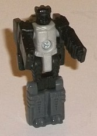
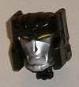
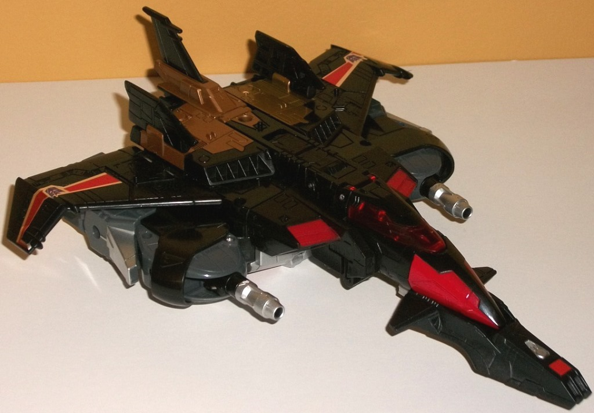
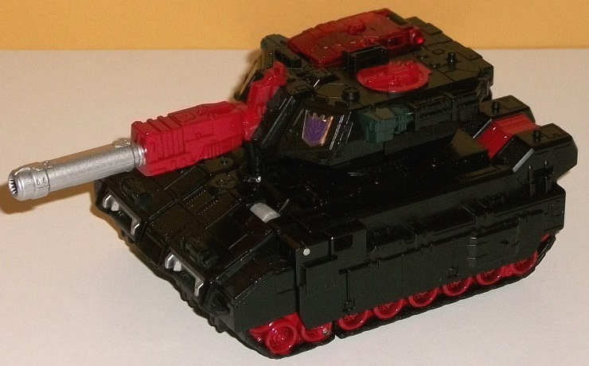
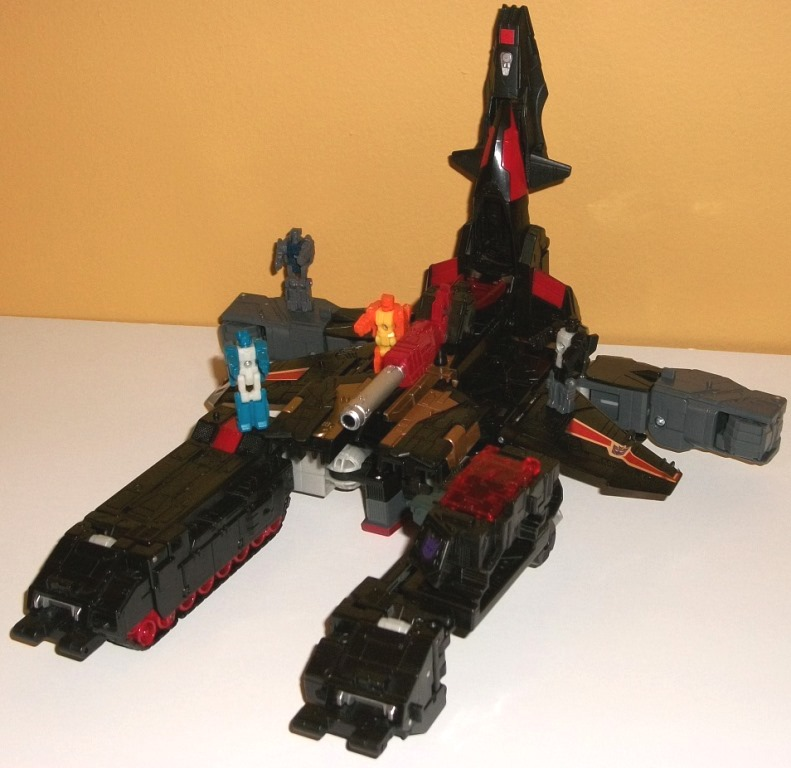
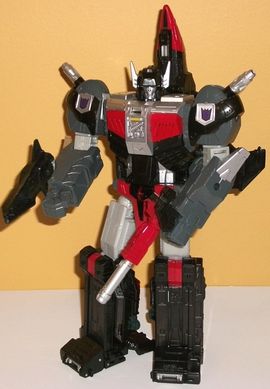

Allegiances
: Autobot
Size
: Leader
Difficulty of Transformation to Base
:
Medium
Difficulty of Transformation to Robot
:
Medium
Color Scheme
: Black, moderately
dark gray, and some light milky brownish gray, red, transparent cherry
red, metallic bronze, yellow, and silver
Rating
: 9.2


Ominus... that's kind
of a clever pun, actually. Anyways, the original Sky Shadow had no Headmaster,
so Ominus is basically a made-up character, though the detailing in his
robot mode is based off Mega, one of Overlord's Godmaster partners (this
mold was pretty obviously going to be remolded into the more popular character
Overlord when we first saw it, so this is sort of a "pre-mold"). Anyways,
in robot mode Ominus has fairly standard detailing on the chest and arms,
with fists molded into the inside of his arm pieces and fairly standard
"pec" chest detailing. I like the angular detailing on the upper legs,
as it looks almost like scales-- a bit creepy and appropriate for a bad
guy. The lower legs have some minor arrow details, and the head is a bit
unique, with side antennae, a round forehead, faceplate, and two eyes separated
by a nose "ridge" in between, even though said ridge doesn't actually point
out like a nose. As is unfortunately the case with most Titan Masters,
there's no paint at all in robot mode to point out any of these details--
Ominus is just mostly black, a light milky brownish gray on the body, and
a darker gray on the legs. Thus, being monochrome, he's kind of boring
in regards to color. As with all Titan Master figures, Ominus can move
at the head and back-and-forth at the shoulders, hips, and knees, with
the latter two moving as one since the lower legs are connected into a
"uni-leg". Given that he forms the head of a Leader-class figure, Ominus'
head mode isn't a complete head, but rather mostly the face of Sky Shadow
with just a bit of forehead and side bits. The sculpting itself is quite
good, with a rather stern expression on Sky Shadow's fairly human face
and eyes, and he also has some side "cheek armor bits" and an "abbreviated"
forehead up top with some horizontal detailing that implies it "links up"
to the full head/helmet of Sky Shadow's robot mode. The silver paint on
the face and yellow in the eyes are really nicely done, and contrast well
with the black.


Sky Shadow's a trademark-friendly
name for Black Shadow, who was until the
previous
Generations toy
a Japan-exclusive character. Given that this toy is
very much a pre-tool for Overlord above being a toy for Sky Shadow himself
(who is a relative nobody and would never have gotten a Leader-class toy
otherwise, let's be honest), his alt modes are actually both half of his
robot mode-- in his Titans Return form, he's both a jet AND a tank at the
same time. The previous toys of this character have simply been the jet
mode only-- the tank is a total result of this being made into Overlord
eventually. So let's talk about the jet first. Like his previous Generations
toy, it's a very nifty-looking jet mode, with a really spiffy silhouette.
You've got sharp angles on the main wings, with the ends angling forward
a bit, a trio of sharp-looking tailfins, and a very long nosecone-- in
fact, when you add the small shield/cockpit piece onto the front, the nosecone
looks very oddly long, a bit TOO long honestly. It's kinda weird... but
then again, this was the case on the original G1 toy. The biggest issue
with the jet is the kibble on the bottom, which unfortunately fits the
"jet-former" usual of being really obvious-- maybe even moreso than normal.
The arms are very obvious below the wings, and the chest sticks out a bit
as well. If you look on the underside you can see basically the entirety
of the top portion of the robot mode-- the transformation of this portion
is very easy, you basically scrunch up the arms and then lay the upper
robot on its stomach and fold out the wings. Given how big the toy is,
that's a definite downside in my opinion. However, at least there's guns
on the shoulders to help hide the arms... somewhat? Kinda? Each gun can
pivot to the sides, as well. As for the color scheme, he's mostly black
(naturally), with some really nice metallic bronze near the back top--
it's a really nice shade, I wish it was used more prominently in the other
modes. There's also some red on the nosecone and the vents, some fairly
dark gray on the obvious arms, and some silver on a few spots like the
guns. There's also those HORRIBLE-looking foil stickers on the wings, which
give them some red and silver stripes to help break up the black, but otherwise
don't look that great. The cockpit has some nice transparent cherry red,
and can lift up to store a Titan Master inside. There's also three ports
on the top of this mode for Titan Masters to peg into-- one on each wing,
and one near the center of the main body of the jet. The mold detailing
is fantastic, with vents, circuitry, aerodynamic lines, and the like nearly
covering the figure, making the jet a lot more detailed than most jet alt
modes-- I love it. As for the tank half, it's much more compact than the
jet mode, but there's no kibble at all. If you look at the tank from the
backside you can see the tops of the knees, but otherwise everything folds
away very well and it's a solid, proportional alt mode that I really have
no problems with whatsoever-- at least as far as looks go. The thing is...
given the transformation, the turret cannot rotate, and the gun can't move
up-and-down either. That's a BIG oversight for a Leader-class toy, though
then again the way it all forms the bottom half of the robot mode is pretty
ingenious... I'm not sure if this sacrifice was worth it or not. Otherwise
it's a great tank mode, with lots of mold detailing-- armor panels, bolts,
and the like are everywhere, along with extremely well-detailed treads
on the sides. The color scheme is-- again-- mostly black, but there's some
red paint on the treads, on the back where the robot knees are, on the
front of the turret, and on a faux porthole on the right side. There's
also some silver on the barrel, and transparent cherry red covering up
a little space on the left side of the tank where a Titan Master can sit
in. (There's also a Titan Master port on the top right side of the turret,
and four near the back-- two on the top of what becomes each robot knee.)
There's also a clip on the topside of this mode and the underside of the
jet mode if you want to combine the two, though it's literally just the
jet sitting on top of the tank-- it's not an elaborate combination or anything.


Even though you can
tell fairly obviously how the various parts form the robot mode, Sky Shadow's
base mode actually isn't half bad. It is mostly the robot mode with some
moderate modifications, so yes, it's obvious the legs are right there on
the front; yes, it's obvious the arms are near the back (and are the weakest
part of the base mode in my opinion); and yes, it's obvious the "tower"
in the back is just the jet nosecone. However, two panels from the back
of the jet/robot move forward a bit to make the big central section look
pretty solid, with some wings on the side because it is SKY Shadow, after
all. The cockpit window folds down and the tank gun is plugged in front
of it with a port on the top of the cockpit window for a Titan Master to
man that main gun. The legs on the front have little flip-out pieces on
the feet that can help Sky Shadow connect to other Titans Return bases
if you so desire, as well. On the right leg the instructions say to rotate
up the tank half-- I guess so you can have another Titan Master sit in
its cockpit-- but it looks kinda odd this way, as it makes the leg portion
look hollow in that configuration. I prefer to leave the tank half folded
back under like on the other leg section. As for additional Titan Master
ports (beyond those mentioned in the vehicle mode), there's also one on
the top of each arm section near the rear and one each on the side of the
main body section, under the sections that fold forward for this mode.
So overall, you can fit a lot of Titan Masters on this base mode, and even
though it's fairly obvious what parts form which in the other modes, the
overall silhouette is pretty decent, and there's certainly some bits here
for some decent interaction.
Sky Shadow's robot mode
is definitely an improvement over his deluxe version, as not only is it
big (as he should be), but the jet kibble isn't as obvious. There is SOME
jet kibble, certainly-- the nosecone sticks up behind his head and the
main wings merely fold back on the sides of the main body-- but it's not
that big of a deal, really. The nosecone behind the head actually gives
his robot mode a bit more of a unique silhouette. The detailing on the
robot mode is definitely a bit more curved and less "evil-looking" than
his other modes, with curved, fairly bulky shoulders (again, with the guns
on top) and lower arms with small silver "wing" details near the elbows.
His main body is pretty angular with its details, but in a fairly blocky
manner, with abs molded into the front of the square "block" of jet mode
behind the main body. The diagonal bars on the chest and the various robotic
details on the center of said chest are also nice little extras. The helmet
sculpt looks great-- it's all proportional with the Titan Master head inside
it, with nice painted silver side antennae. The legs are pretty blocky
unlike the rest of Sky Shadow, but then again... well, that's your preview
of Overlord, there. Otherwise they look pretty good. The color breakup
is pretty well-done throughout this entire mode, with red, black, silver,
and dark gray spread throughout very well. There's unfortunately some bland
light milky gray plastic as well, but thankfully it's only used on the
elbows, upper legs, and a few other minor connector parts. For articulation,
Sky Shadow can move at the neck, shoulders (at two points), elbows (at
two points), inwards slightly at the elbows, and movement at the hips (at
three points), knees, movement slightly up-and-down at the toes and heels,
and ankle tilts. Other than waist rotation, you can't ask for much more--
he can get into some GREAT poses. As for accessories, he can hold the tank
turret-gun in one hand, and the little add-on piece that goes underneath
the jet nosecone becomes a little shield that can be pegged into the side
of one of his arms, and which can hold its own Titan Master if you position
it where one can sit in.
Titans Return Sky Shadow's
strength is definitely his superb robot mode, which only has some minor
kibble and is otherwise stellar. The tank mode is pretty solid overall,
too. His jet mode looks nice at first, but has some substantial kibble
on the underside; his base mode definitely has some obvious legs, arms,
and jet bits sticking out, but compared to most other bases it's pretty
neat. A definite recommendation; he's a pretty versatile, fun Transformer
overall with only a few real downsides. My favorite Leader-class Titans
Return figure.
Review by Beastbot